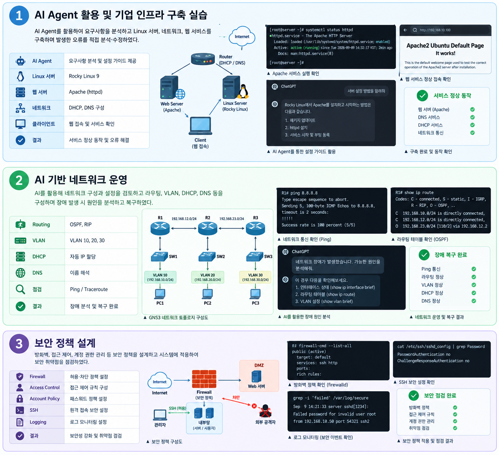

이성환은
노력형인가?
책임감 있게 맡은 업무를 수행하고, 배려와 공감을 바탕으로 문제 해결을 이끌어냅니다.
[인프라 구축]
[네트워크 운영]
SCOPE INTAKE
공개 범위
이 페이지에 무엇을 담고, 무엇을 담지 않을지 먼저 정합니다.
공개할 정보
- 프로필
- 경험
- 강점
공개하지 않을 정보
- 얼굴
- 경력사항
- 자격증
PAGE STATUS
COMPLETE — 이성환
검토 완료됨
CASE NOTES
강점 또는 취향 세 가지
말로 설명하기보다, 실제로 있었던 상황과 결과로 보여주세요.
1. AI Agent 활용 및 기업 인프라 구축
상황 · 행동 · 결과 보기
- 상황
- AI Agent 활용 및 기업 인프라 구축 실습
- 행동
- AI Agent를 활용하여 요구사항을 분석하고 Linux 서버, 네트워크, 웹 서비스를 구축하며 발생한 오류를 직접 분석·수정하였다.
- 결과
- 기업 인프라 구축 과정을 이해하고 문제 해결 능력을 향상시켰으며, 안정적으로 서비스를 운영할 수 있는 환경을 구축하였다.
2. AI 기반 네트워크 운영
상황 · 행동 · 결과 보기
- 상황
- AI 기반 네트워크 운영
- 행동
- AI를 활용해 네트워크 구성과 설정을 검토하고 라우팅, VLAN, DHCP, DNS 등을 구성하며 장애 발생 시 원인을 분석하고 복구하였다.
- 결과
- 네트워크 운영 절차를 이해하고 장애 대응 능력을 향상시켰으며, 안정적인 네트워크 환경을 구현하였다.
3. 보안 정책 설계
상황 · 행동 · 결과 보기
- 상황
- 보안 정책 설계
- 행동
- 방화벽, 접근 제어, 계정 권한 관리 등 보안 정책을 설계하고 시스템에 적용하여 보안 취약점을 점검하였다.
- 결과
- 보안 정책의 중요성을 이해하고 시스템의 보안성을 강화하는 경험을 쌓았으며, 보안 사고 예방을 위한 기본 역량을 갖추었다.
EVIDENCE
근거 자료
개인정보를 제거한 산출물, 캡처, 또는 결과를 확인할 수 있는 이미지입니다.
